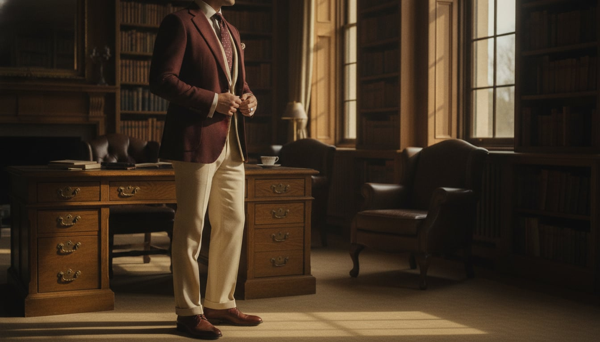
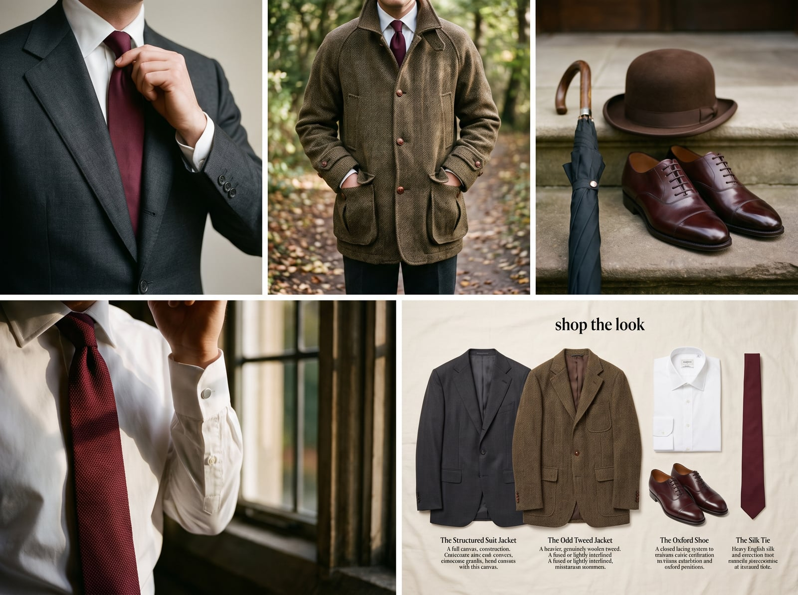
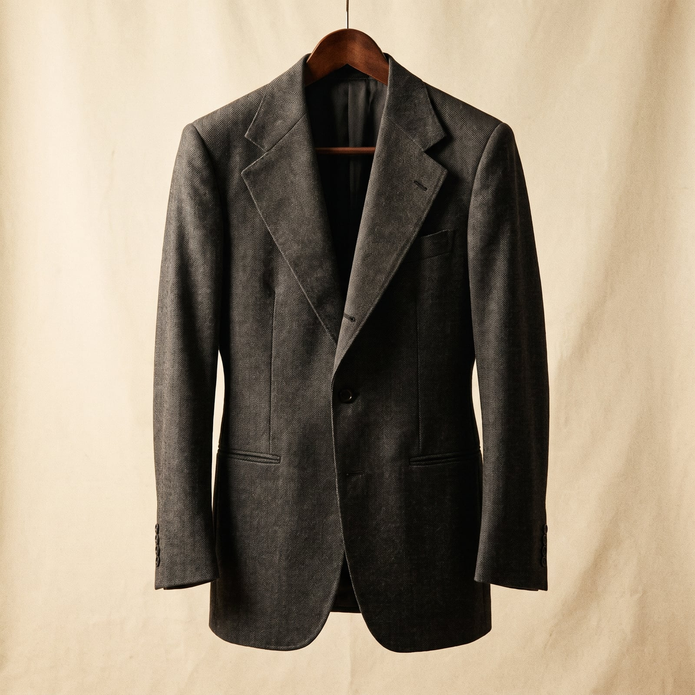
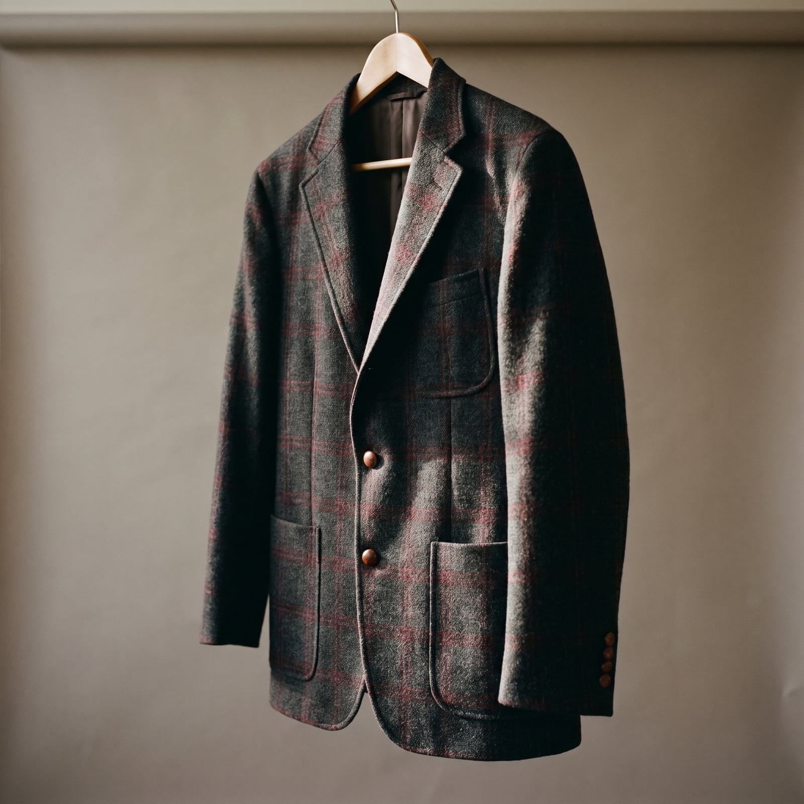
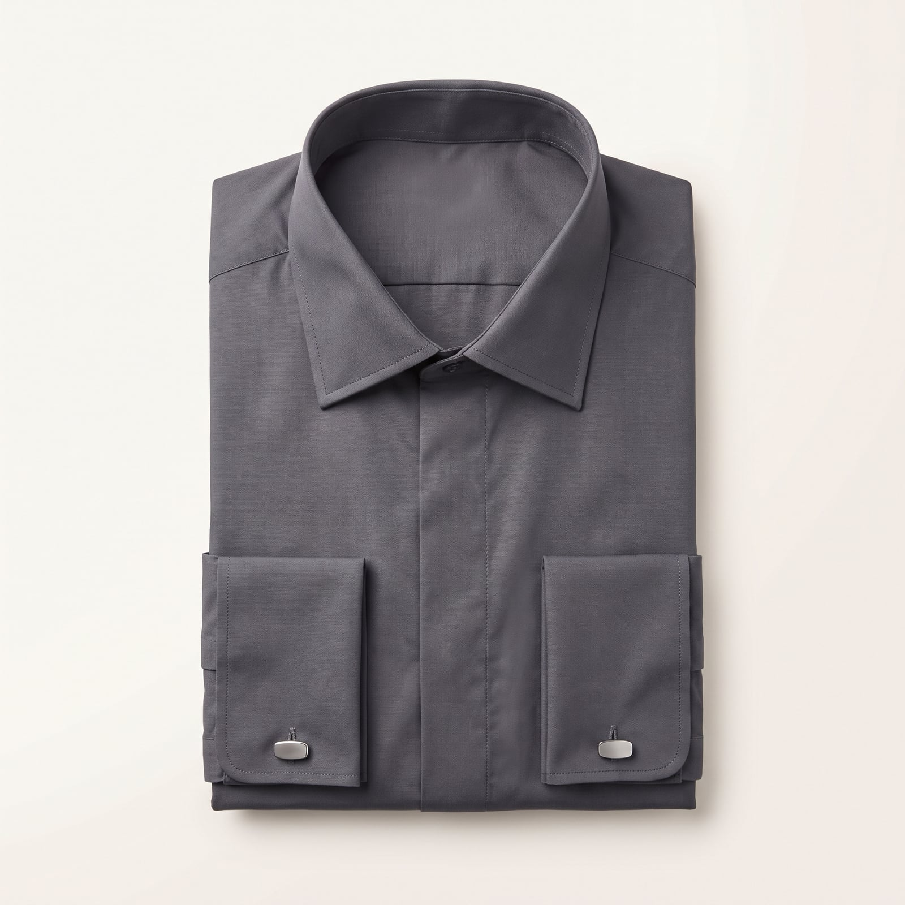
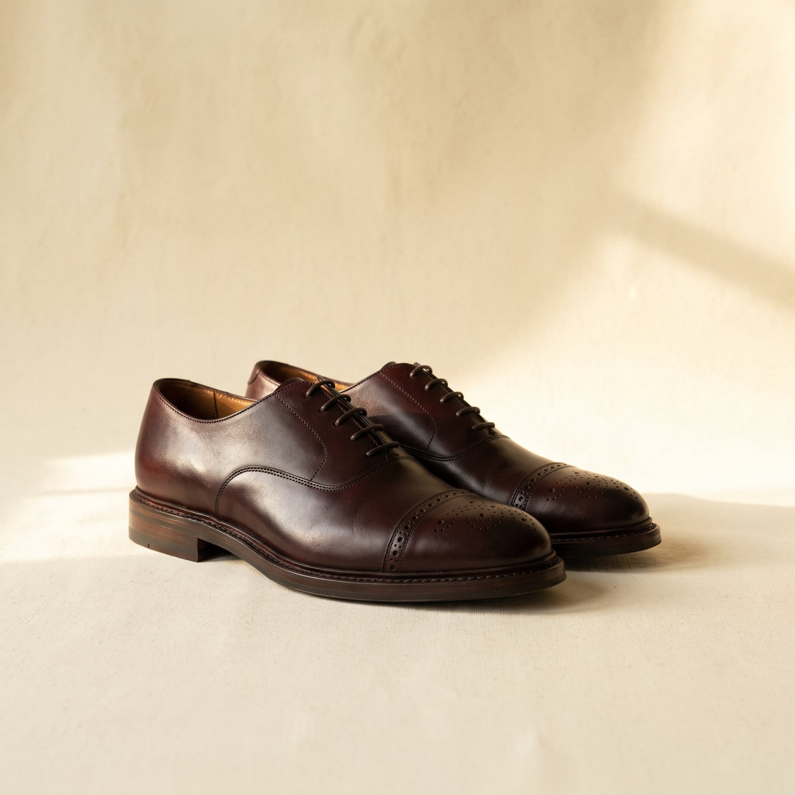
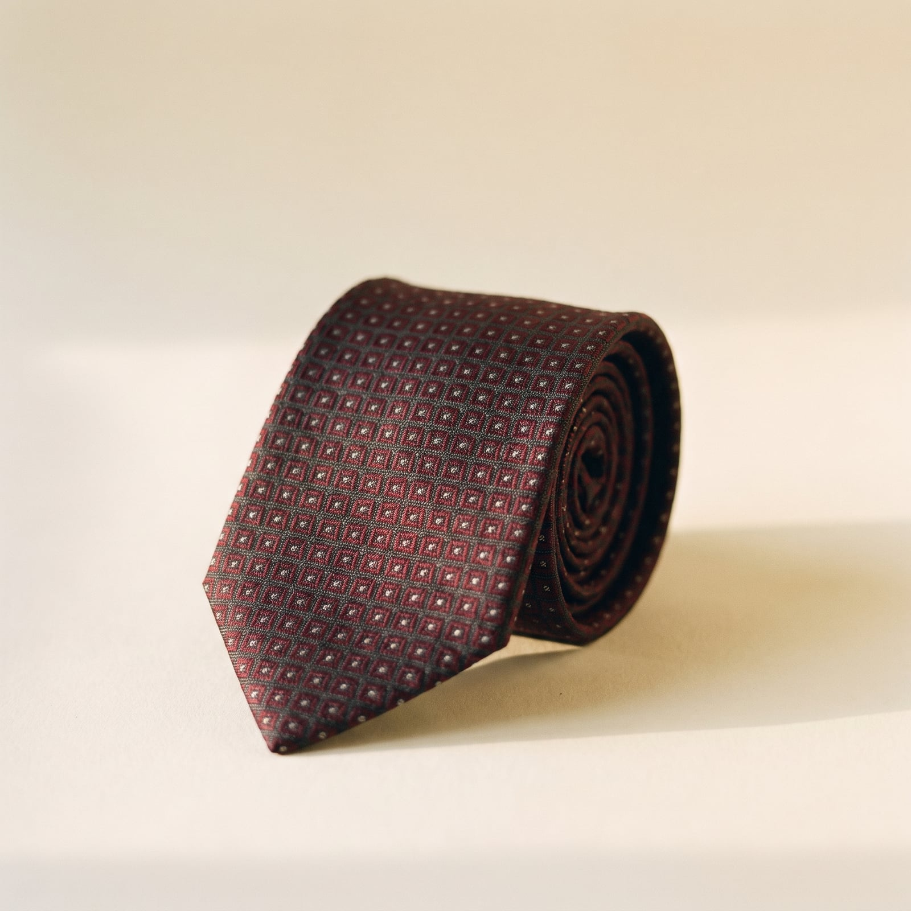

The Row
Savile Row has been in the tailoring business since the early 1800s, and it has never entirely lost the military bearing it started with — many of its founding houses cut regimental uniforms before they cut suits, which is part of why an English jacket still holds itself like it's standing at attention. Beau Brummell, the street's unofficial patron saint, spent the early 1800s stripping menswear of embroidery and color in favor of exquisitely cut dark wool, arguing that true elegance was never noticed, only felt.
What survived him is a house style built on structure: a shoulder with real presence, a waist nipped just enough to suggest a body underneath, a canvas interior built by hand over weeks rather than glued in an afternoon. Even the country wing of the tradition — tweed for the estate, an odd waistcoat, a flat cap for the shoot — carries the same formality, just in different fabric.
It's a style for people who find comfort in structure, in knowing exactly what's expected and delivering it with total control. Where sprezzatura performs ease, Savile Row performs authority — the suit as a small, well-fitted piece of architecture that does a great deal of quiet work on your behalf before you've said a word in the room.
- A structured, padded shoulder with real definition
- Hand-canvassed construction that molds to the body over years, not days
- A nipped waist and a strong, often peaked, lapel
- Odd tweed jackets and waistcoats for country wear, in the same disciplined spirit
- Accessories that finish rather than decorate — a plain silk tie, a bowler in period, an umbrella

The Structured Suit Jacket
Savile Row's houses were cutting military tunics before they cut suits, and the structured, padded shoulder never fully left — Anderson & Sheppard softened it into the London drape in the 1930s, while Huntsman kept a sharper, more built silhouette that still reads as a uniform standing at attention.
Full-canvas construction at a genuine discount from bespoke, though the house shoulder is softer than the Row's classic silhouette.
Shop this →English cloth and cut from an actual Row house, without the bespoke wait or price.
Shop this →A genuine bespoke commission, cut and fitted over several visits, built to be re-cut for decades.
Shop this →
The Odd Tweed Jacket
The odd jacket — tweed cut to be worn with unmatched trousers — is the Row's concession to the country, descended from shooting and estate wear that needed the same formality as the town suit in tougher cloth.
Genuine wool tweed at a real discount, machine-finished.
Shop this →British-woven tweed, proper country cut, from houses that specialize in exactly this jacket.
Shop this →Bespoke-cut in a mill-specific tweed, often woven to a pattern unique to the client.
Shop this →
The Poplin Shirt
Jermyn Street built its own shirtmaking tradition alongside the Row's tailoring, favoring a crisp cotton poplin and a spread or cutaway collar built to be seen under a tie, not instead of one.
A genuine Jermyn Street name at its most accessible price point.
Shop this →The shirtmaker most associated with the Row itself, off-the-peg.
Shop this →Made to a personal pattern, with a collar cut for one specific neck and tie knot.
Shop this →
The Oxford Shoe
The closed-lace Oxford became the Row's default because its clean, seamless toe reads as more formal than a Derby's open lacing — a distinction English tailoring has never stopped caring about.
Goodyear welted and English-made, the standard recommendation for a first proper pair.
Shop this →A step up in leather quality and last refinement, still fully resoleable.
Shop this →Made on a last built for one foot, in calfskin that will outlive the suit it's worn with.
Shop this →
The Silk Tie
A plain or subtly patterned silk tie is the one place the Row allows itself a signature without breaking formality — a house stripe or small motif rather than anything that competes with the suit.
The tie most Row tailors themselves would point a client toward.
Shop this →Heavier, rarer silk with a hand no machine reproduction quite matches.
Shop this →Invest the real money in the structured suit jacket itself — the padded shoulder and nipped waist depend entirely on construction quality a lower price point simply can't fake, and a half-canvassed compromise collapses within a year where a full canvas holds its shape for decades. Have it properly fitted to your actual shoulders rather than bought off the rack and hoped into place; this silhouette has no forgiveness for a jacket that doesn't fit at the shoulder seam.
Reserve the tweed and odd jackets for genuinely rural or country contexts — a shooting weekend, a walk through actual mud — and let them look slightly worn in a way the town suit never should. The contrast between disciplined city tailoring and relaxed country tweed is the whole logic of an English wardrobe; it only works if both halves stay in their own lane.
This is the tweed-versus-suit-coat distinction in its purest form: a country tweed jacket is cut roomier, in a heavier cloth, meant to move under a gun or over a jumper in the rain — worn into the City for a meeting, it reads as a man who got dressed in the dark, not as versatile layering. A structured city suit coat, meanwhile, looks absurd on a grouse moor; the sharp shoulder and fine cloth that impress in a boardroom just get in the way outdoors and get ruined by the first bit of weather. Neither jacket is formal or casual in isolation — they're formal or casual for a specific place, and swapping them is the single most common way this wardrobe gets misread.
Don't let the accessories compete with the tailoring — a busy tie, a boutonniere, or a pocket square doing too much work undercuts a silhouette that's supposed to communicate through cut and cloth alone. Avoid buying this jacket in a fashion-slim contemporary fit; the structured shoulder and nipped waist are a specific, traditional proportion, not a template to be updated each season.
Fresco or tropical wool instead of worsted, still fully canvassed, still structured -- this wardrobe does not do unstructured, even in July. A Panama hat is the one real concession.
A heavier flannel suit under a proper wool overcoat (a chesterfield, ideally), a waistcoat added back in, and a cashmere scarf knotted properly rather than just wrapped.
A fitted trench or a covert coat over the suit, an umbrella that matches the rest of the outfit's seriousness, and galoshes if truly necessary, removed the moment one is indoors.
The chesterfield gets swapped for something heavier still, real leather-soled boots get a rubber-soled country cousin, and gloves become non-negotiable rather than optional.
There is nowhere further up to go -- this is already the ceiling. For black tie specifically: a proper dinner suit, grosgrain lapel, no exceptions.

The Scottish Highlands for the shooting season, a London club for everything else, and Venice exactly once, taken seriously rather than as a honeymoon cliche. A place with a proper concierge is preferred to one with a view, on the theory that service outlasts scenery.
The itinerary rarely strays far from a short, well-worn list — the same hotel, the same tailor's fitting worked into the trip, the same restaurant that's kept a table for the family for three generations.
Anthony Trollope and Evelyn Waugh, read less for plot than for the precise social comedy of people behaving exactly as their class expects them to. A well-thumbed Debrett's kept more as reference than aspiration.
The Financial Times read in full at breakfast, paper edition only, in an order that never varies — front section, then the pink pages, obituaries checked out of habit rather than morbidity.
Find it on Amazon →Elgar and Vaughan Williams on principle, and an opera subscription taken as seriously as club membership — missed only for genuine emergencies, and complained about extensively when the tenor disappoints.
Exactly the right amount of enthusiasm for a military brass band at the right occasion, and a private, slightly guilty fondness for a big band record that gets played only when no one else is home.
Listen on YouTube →A London townhouse with a proper library, leather-bound sets acquired rather than curated, and family portraits nobody quite remembers commissioning but everyone would notice if removed.
A drinks trolley that has never once been empty, a fireplace that's genuinely used rather than decorative, and furniture old enough that reupholstering it is treated as restoration rather than shopping.
See more on Pinterest →Shooting, taken up young and never really abandoned, and a standing tailor's appointment approached with the gravity of a doctor's visit — missed reluctantly, and rescheduled immediately.
Chess played slowly, over weeks, by correspondence if necessary, against the same handful of opponents. A genuine, lifelong subscription to a specific London club that outlived several of its most notable members.
Learn more →